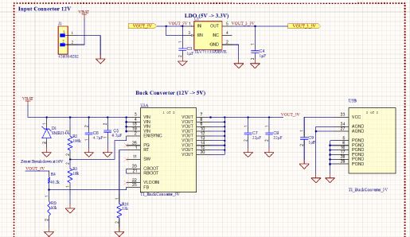
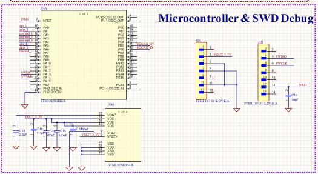
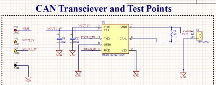
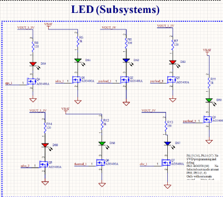
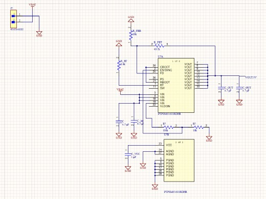
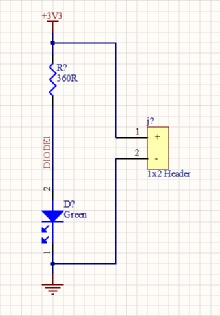

The Mini-EPS board
An EPS (electrical power system) takes raw power, regulates it, and hands it out to the rest of a satellite. The Mini-EPS is a scaled-down version of one, used in the lab's weekly hardware sessions as a teaching board. Each week the hardware lead covers a new part of the design, and I build it out in my own Altium project.
It's directly relevant to my role as EPS Deputy on TeraLink-1, where the real spacecraft uses a full-size version of the same ideas: regulated rails, a microcontroller managing power, and a data bus to the flight computer.
Block by block
The schematic is organised into four functional blocks:
| Block | What it does |
|---|---|
| Power | 12 V input with a 16 V zener for overvoltage protection, a TI TPSM63603 buck module stepping 12 V down to 5 V, and an LDO regulating 5 V down to 3.3 V. |
| Microcontroller and debug | An STM32C562 microcontroller with decoupling, reset, and SWD programming and debug headers. |
| CAN and test points | A CAN transceiver so the board can talk to the rest of the satellite, plus test points on each rail for probing with a multimeter or scope. |
| Subsystem LEDs | MOSFET-switched status LEDs, one per spacecraft subsystem (ADCS, payload, OBC, thermal and more), driven by the microcontroller. |




How it came together
Imported the power module
Brought in the manufacturer's symbol and footprint for the TI TPSM63603 and packaged them into an integrated library.
First power schematic
Captured the buck regulator stage on its own: input, feedback divider, frequency-setting resistor and output capacitors.
Added the microcontroller
Imported the STM32C562 symbol, footprint and 3D model, and pulled the manufacturer's IBIS and BSDL models for it.
Full schematic
All four blocks connected: power, microcontroller and debug, CAN and test points, and subsystem LEDs.
PCB layout
The board layout is now under way.

Altium skills so far
- Schematic capture organised into functional blocks, with net labels and power ports
- Multi-part components (the power module and microcontroller each split across several symbol parts)
- Importing manufacturer parts with symbols, footprints and 3D STEP models
- Building my own schematic and footprint libraries, and integrated libraries
- Designing for test and debug: test points, SWD headers, status LEDs
- Starting PCB layout from the finished schematic
Practice board: LED
On my own, to practise the basic Altium workflow, I followed a tutorial to build a tiny board: a 3.3 V supply through a 360 Ω current-limiting resistor to a green LED, with a two-pin header. I drew my own LED symbol, built an 0805 footprint library, and imported a real Yageo resistor from SnapEDA with its 3D model.

What's next
- Finish placing and routing the Mini-EPS board and pass Altium's design-rule check.
- Generate fabrication files and, if the lab orders boards, assemble and bring one up on the bench.
- Take these skills into the lab's real hardware as Hardware Lead and EPS Lead from January 2027.